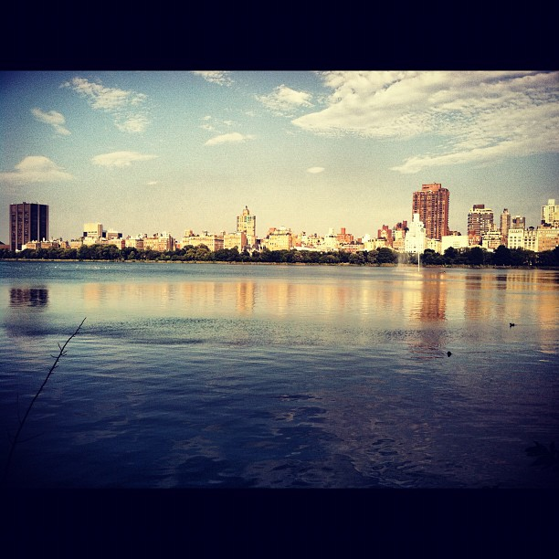
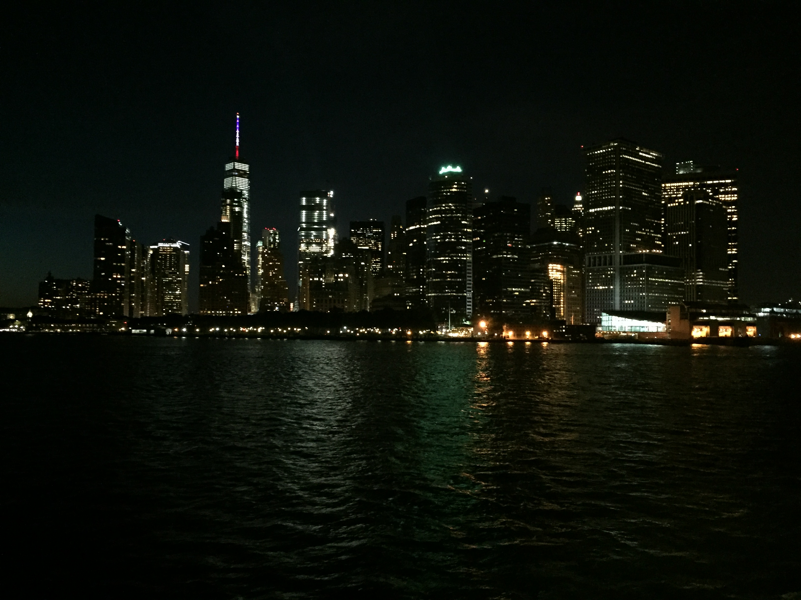
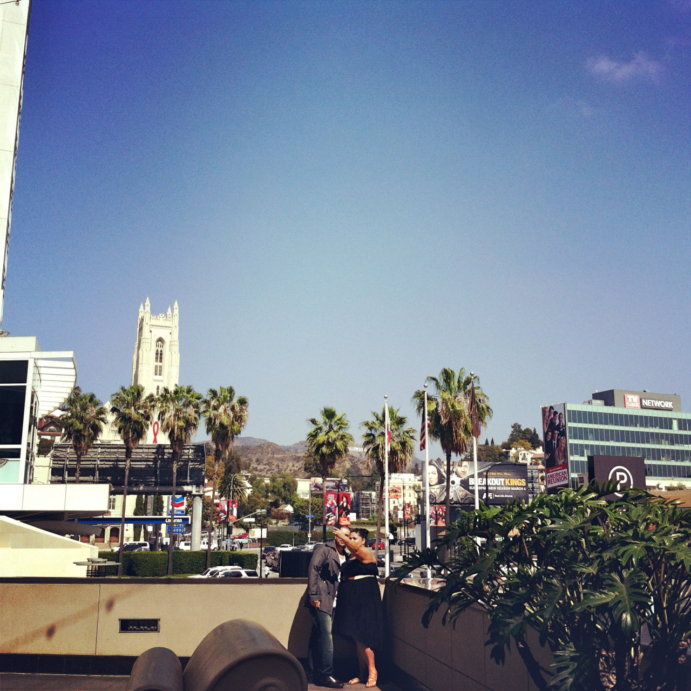
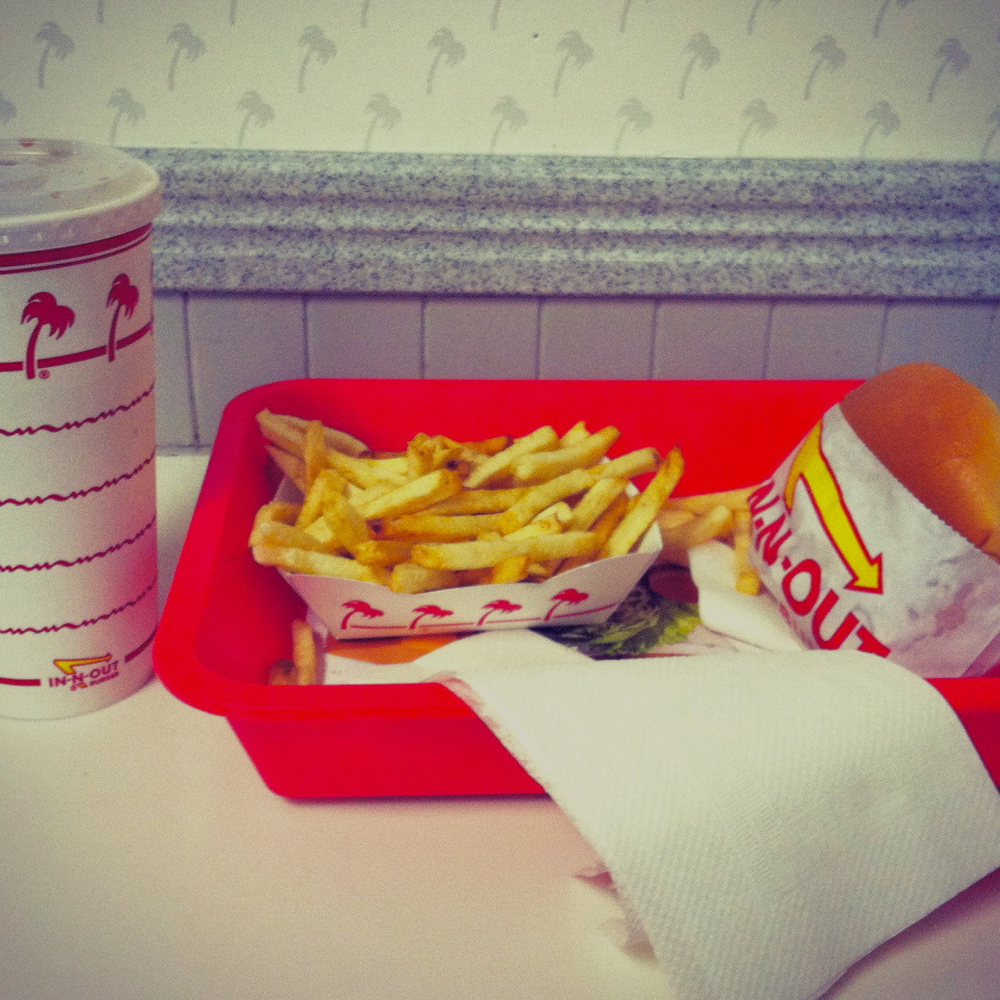
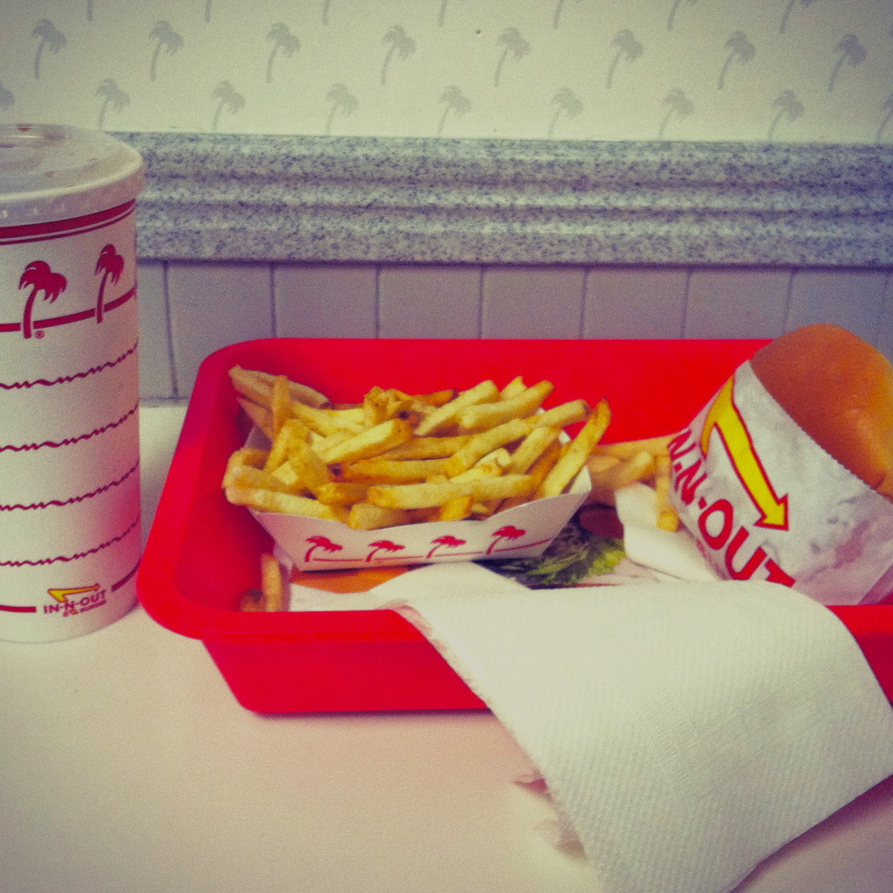
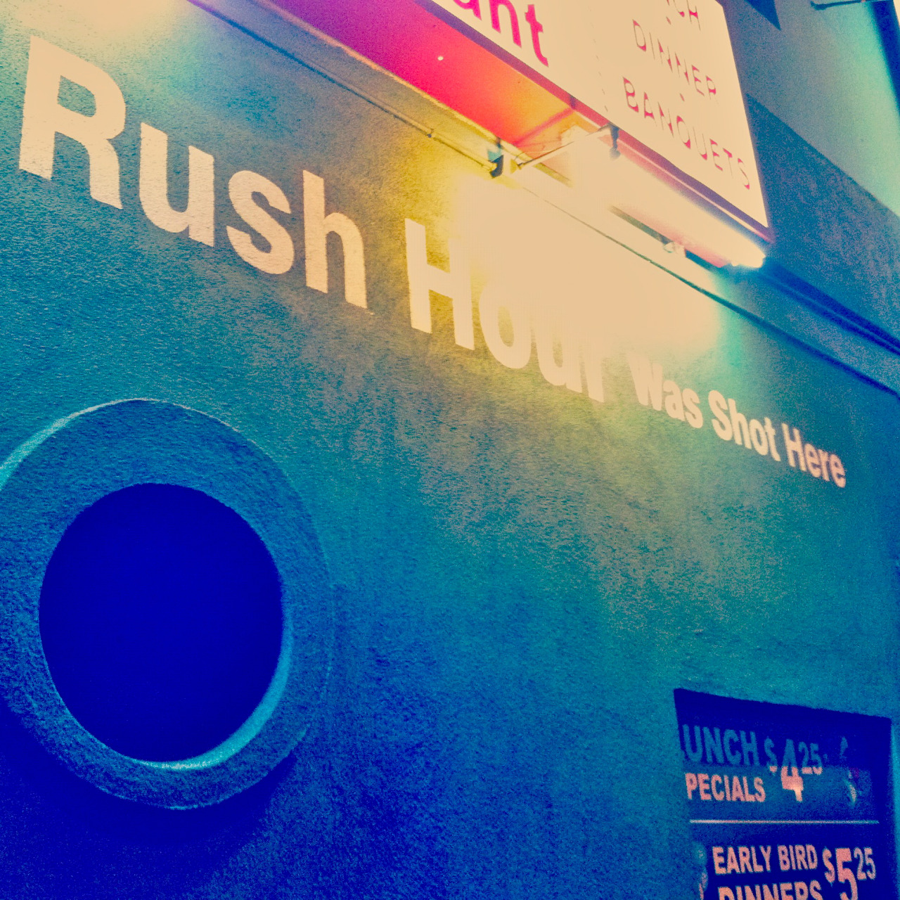
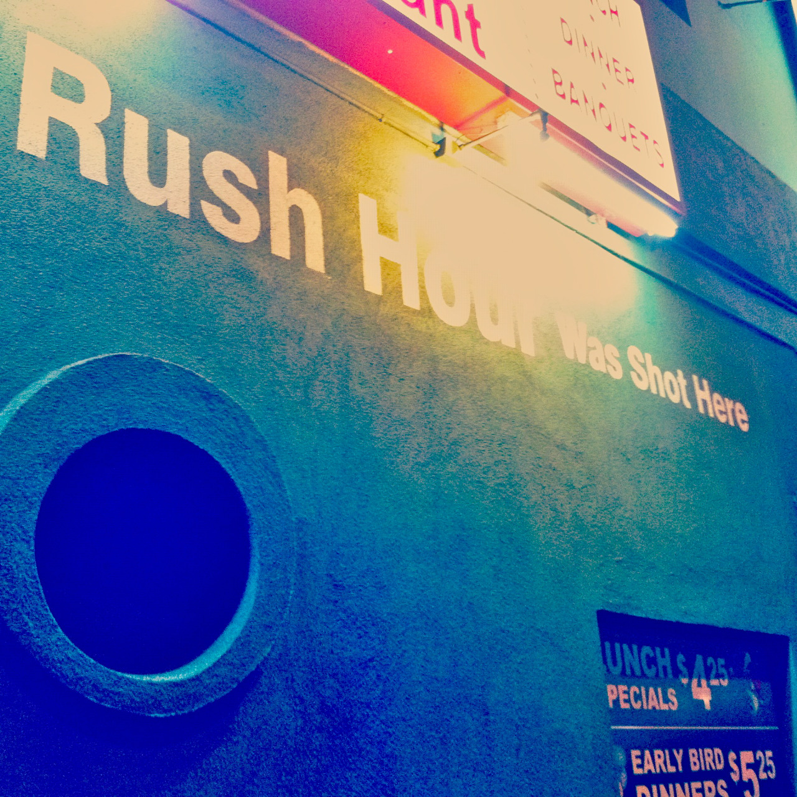

I am the child of immigrants. I was born in Washington, DC - the last of four children - when my parents moved across the ocean for a better life. I grew up juggling two cultures, often finding difficulty balancing opposing expectations and customs. With some success, and no shortage of tribulations, I became the person I am today - the product of an "American Dream". Images include: Washington Monument (picture taken during President Obama's inauguration - 2013), Coney Island, Jacqueline Kennedy Onassis Resevoir, Hollywood Walk of Fame, & Chinatown, Los Angeles.






 

 
